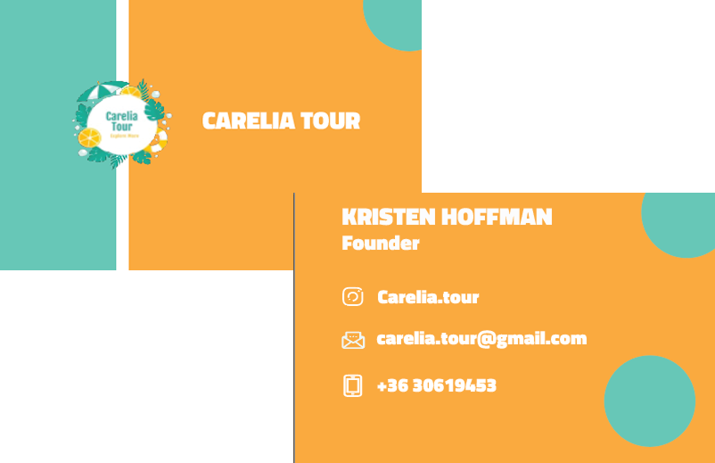
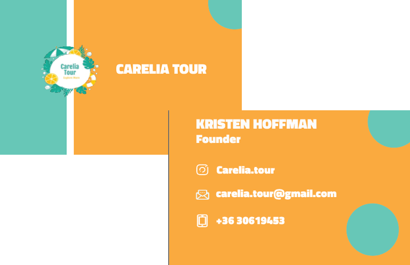

Hi! I am
Katerina SkubevaI’m a freshly graduated UX/UI designer with 12 years of professional experience in fast-paced, real-world environments.
My background helps me approach design with maturity, structure, and a focus on solving real user needs with empathy and clarity.
Hire me
About Me
Based in Budapest, Hungary, I'm available for freelance collaborations and full-time positions.
My transition into UX/UI wasn’t accidental, it was driven by a passion for problem solving, empathy, and creating meaningful digital experiences.
I believe great design happens when curiosity meets structure, and I’m excited to turn insights into clear, helpful digital experiences.
Resume
My Projects


Flora Whisper – UX Case Study
The Challenge
Beginner plant owners often hesitate to buy plants online because they fear they won’t know how to take care of them. Most online plant shops focus only on sales, not on helping users feel confident.
- Encourage beginners to buy plants
- Provide simple care instructions for each product
- Build a warm, trustworthy online experience
The Objectives
- Build trust through a fresh and natural brand look
- Educate while selling by including easy care tips with every plant
- Simplify the buying process with a fast, 3-step checkout
Research & Insights
- User Interviews: 5 beginner plant owners → 4/5 said they fear “killing the plant.”
- Competitive Analysis: 3 online plant stores analyzed → none offered integrated care tips.
- Key Insight: Users wanted visual, simple guidance and a friendly tone that doesn’t feel “technical.”
The Solution
- Tone & Feel: Soft green, lavender, and rose tones for a fresh, warm vibe
- Care Cards: Mini visual cards with 3 simple care icons under each product
- Quick Purchase: Sticky “Add to Cart” button + simplified checkout
- Emotional Design: Leaf illustrations for a friendly, natural vibe
My Role & Tools
Role: UX Research, UI Design, Prototyping
Tools: Figma (UI & Prototypes), Canva (custom icons)
Results (Concept Testing)
- 3/4 testers said they would buy because of the care tips
- All testers understood the navigation within 10 seconds
HealthHub – UX Case Study
The Challenge
Fitness enthusiasts needed a platform where they could not only shop for equipment but also learn and connect with others. Existing websites felt too transactional, with no sense of community.
The Objectives:
- Combine e-commerce with community-driven content (blog + forum)
- Build trust with a professional, energetic brand feel
- Make browsing and purchasing seamless
Research & Insights:
- Surveys: 10 gym-goers → 7/10 said they want to read expert tips while shopping
- Competitive Research: Popular sites lacked forums or interactive features
- Key Insight: Users stayed longer when content felt educational, not purely commercial
The Solution:
- Visual Identity: Soft mint green, lavender, and aqua for an energetic but friendly vibe
- Community Hub: Blog + forum integrated directly into the shop
- Wireframes: Defined clear product categories with educational articles linked underneath
- Trust Elements: Highlighted product reviews and trainer recommendations
My Role & Tools:
Role: Co-creator of the UX structure, Wireframing, UI design decisions
Tools: Figma, Miro
Results (Concept Testing):
- Test users described it as “more like a fitness community than just a shop”
- Users could navigate from blog posts to a product page in under 5 clicks


 



.png)

Let's Talk
Got a project, idea, or question? Fill out the form, and I’ll get back to you as soon as possible. I’m always happy to connect, collaborate, or just chat about design.